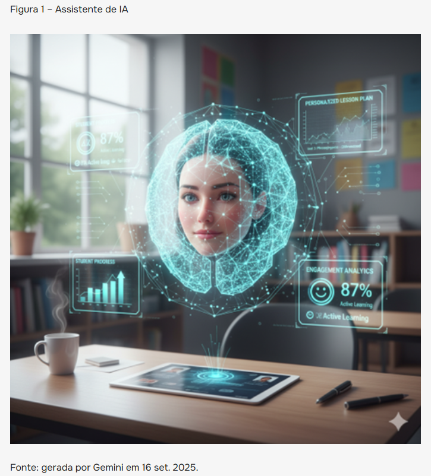
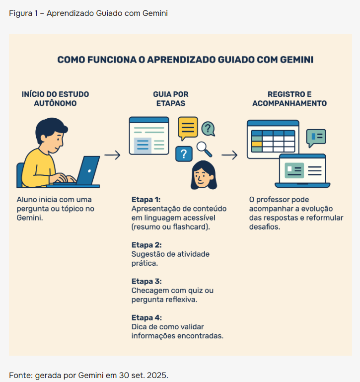
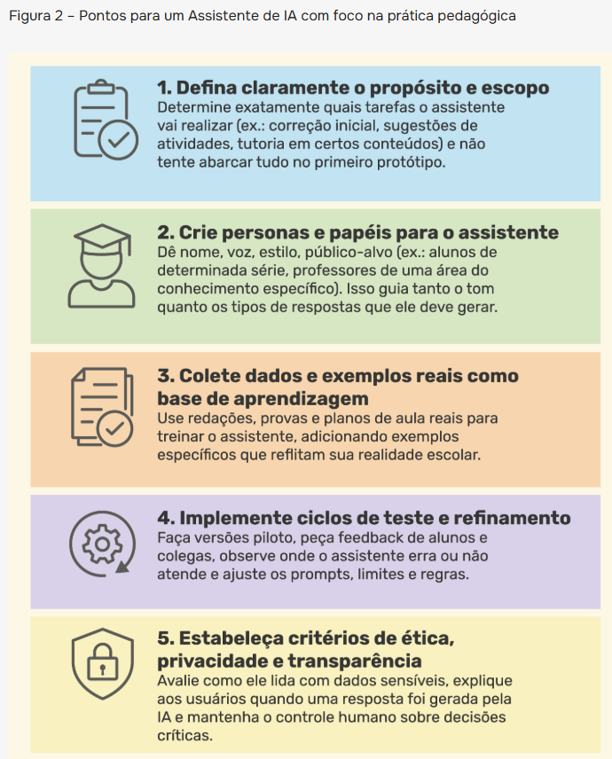
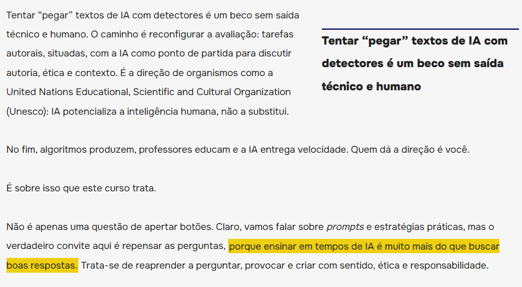
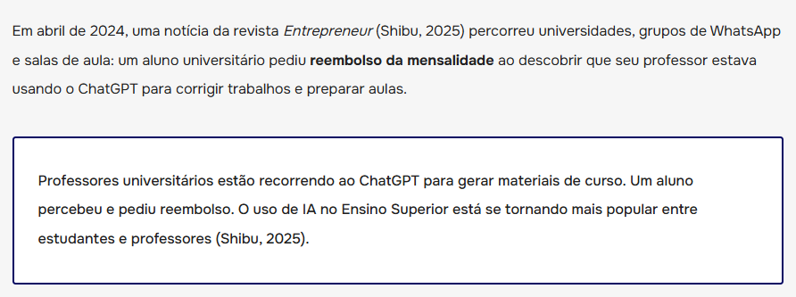
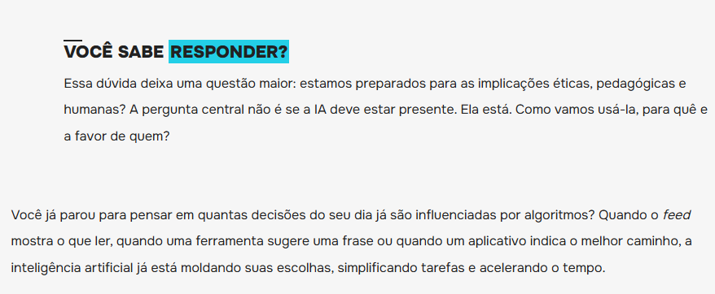
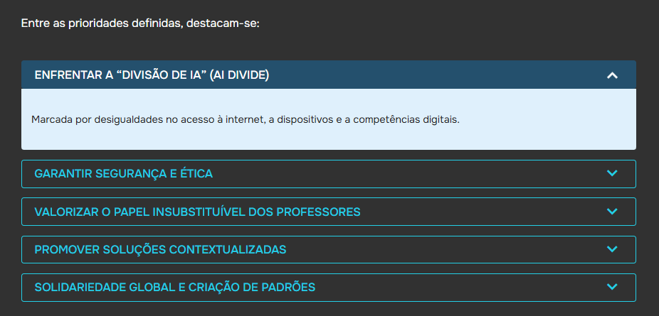
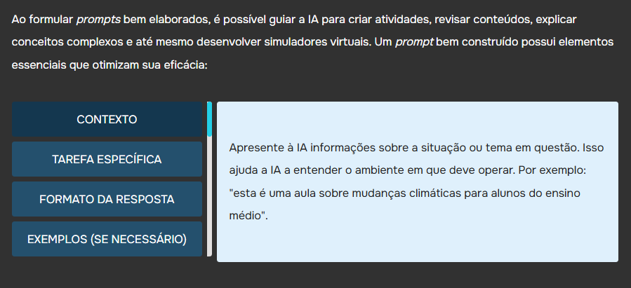
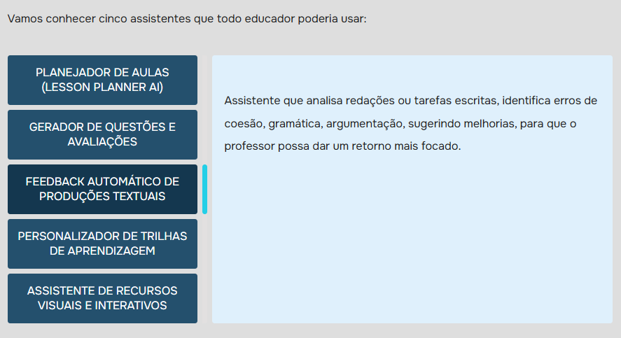

Formação docente diante de uma tecnologia que já entrou na sala de aula.
O curso Educar com IA: Ética, Criatividade e Presença foi lançado em 2025 pela Vitru Educação, em parceria com o YouTube, como uma formação gratuita e on-line voltada a professores e demais interessados no uso pedagógico da inteligência artificial. A proposta reúne reflexão sobre ética, autoria, limites e possibilidades da IA com estratégias práticas para sua integração à educação.
Minha participação concentrou-se no Design Educacional do livro digital disponibilizado pela UniCesumar, trabalhando a apresentação do conteúdo em um ambiente de aprendizagem que combina texto, recursos visuais, destaques editoriais e interatividade.
Transformar conteúdo em uma experiência digital de aprendizagem.
Minha atuação envolveu o tratamento pedagógico e visual do livro digital, articulando conteúdo, recursos de destaque, imagens produzidas com inteligência artificial, infográficos, diagramas e objetos interativos.
O trabalho exigiu decidir quando destacar, quando visualizar, quando problematizar e quando propor interação, preservando a coerência entre conteúdo, objetivo pedagógico e experiência de leitura.
Design Educacional
Organização e tratamento pedagógico do material para o ambiente digital.
Produção visual com IA
Uso de imagens geradas com IA conforme a função comunicacional e pedagógica.
Design da Informação
Infográficos e representações visuais para processos, critérios e relações conceituais.
Recursos editoriais
Olho, marcador de texto, caixas e outros destaques para orientar atenção e leitura.
Interatividade
Objetos exploráveis e perguntas de reflexão para romper a linearidade do conteúdo.
Texto, imagem, destaque e interação como partes do mesmo percurso.
O livro digital não foi tratado como uma simples sequência de páginas. Os recursos foram distribuídos conforme sua função: destacar uma ideia, provocar reflexão, representar visualmente uma relação, exemplificar um conceito ou permitir exploração interativa.
O recurso entra quando melhora a compreensão ou a experiência — não apenas para ocupar espaço.
A imagem entra quando ajuda a visualizar uma ideia.
Imagens produzidas com inteligência artificial foram utilizadas como parte da comunicação visual do livro. A decisão não se limitou à geração: era necessário avaliar sua relação com o conteúdo, sua função no percurso pedagógico e sua adequação ao ambiente educacional.

Tornar relações complexas visíveis.
Infográficos e diagramas foram utilizados para transformar explicações extensas em representações mais sintéticas, permitindo visualizar processos, etapas e relações entre conceitos. A intenção não era apenas decorar o material, mas selecionar o que ganhava clareza quando representado visualmente.


Destacar sem fragmentar a leitura.
Diferentes recursos editoriais foram utilizados para criar hierarquia, orientar a atenção e destacar conceitos ou provocações importantes. O critério não era simplesmente aumentar a quantidade de elementos gráficos, mas identificar quais informações realmente se beneficiavam de um tratamento diferenciado.


Quando a leitura deixa de ser apenas linear.
Os objetos interativos permitem organizar conteúdos em camadas, apresentar alternativas de navegação e provocar respostas do estudante. Sua presença precisa ter função pedagógica: explorar, comparar, refletir ou acessar informações progressivamente.

Você Sabe Responder?
A pergunta interrompe momentaneamente a leitura expositiva e convida o estudante a se posicionar diante do problema antes de seguir.



Diferentes decisões, um mesmo princípio pedagógico.
As evidências selecionadas mostram que o Design Educacional do livro atuou em diferentes escalas: da ênfase em uma frase à construção de uma representação visual completa; da organização editorial à inserção de interatividade.
Imagem com função comunicacional associada ao conteúdo.
Processo transformado em uma representação visual organizada.
Hierarquia e atenção aplicadas ao texto digital.
Conteúdo dividido em blocos que podem ser explorados pelo estudante.
Um livro digital publicado que integra conteúdo, visualidade e interação.
O resultado foi um material educacional digital que combina diferentes linguagens e recursos em uma experiência destinada à formação docente. O projeto tornou concreta a integração entre Design Educacional, comunicação visual, inteligência artificial e interatividade.
IA amplia possibilidades. O Design Educacional continua dando direção.
O projeto reforçou que o valor de uma tecnologia educacional não está apenas na ferramenta utilizada, mas nas decisões que orientam sua aplicação. Imagens, infográficos, destaques e interações só ganham sentido quando respondem a uma necessidade de aprendizagem e se integram de maneira coerente ao conteúdo.
“A tecnologia amplia as possibilidades de produção. O Design Educacional transforma essas possibilidades em experiências de aprendizagem.”